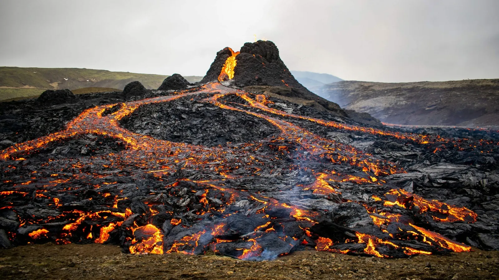
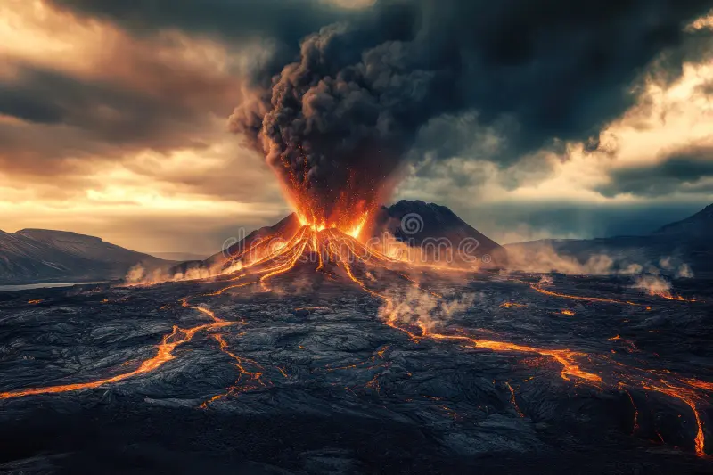
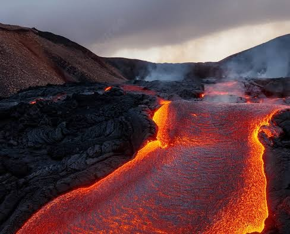
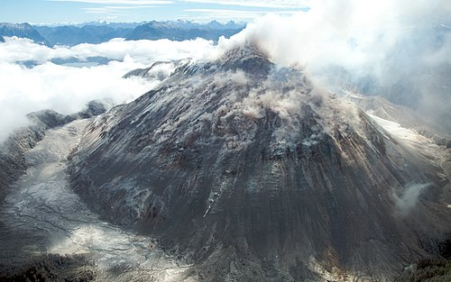

Processos Químicos e Físicos
Processos Físicos
Os principais processos físicos são: a fusão das rochas, o movimento do magma, o aumento da pressão, a erupção e o resfriamento da lava. O aumento de temperatura no interior da terra provoca o derretimento das rochas, formando o magma. Quando o magma se forma, ele se movimenta e sobe em direção à superfície devido às diferenças de pressão e densidade, e quando chega na superfície, o magma passa a ser chamado de lava e ao perder calor, a lava se resfria e solidifica, formando rochas vulcânicas.

Processos Químicos
Também acontecem processos químicos durante a atividade vulcânica, o magma contém os gases dissolvidos como o vapor de água (H₂O), dióxido de carbono (CO₂) e dióxido de enxofre (SO₂). Durante a subida do magma, os gases são liberados e além disso, podem ocorrer processos de oxidação e formação de novos minerais durante o resfriamento e a solidificação do material vulcânico e alguns gases reagem com as substâncias presentes na atmosfera, formando os compostos ácidos, como o ácido sulfúrico (H₂SO₄) e o ácido carbónico (H₂CO₃).

Diferença Entre Magma e Lava
O magma é a rocha fundida que se encontra no interior da terra, quando esse material chega na superfície durante uma erupção, ele passa a ser chamado de lava, portanto, a principal diferença está no local onde o material se encontra, o magma fica no interior da terra e a lava superfície.
-
Magma
É a rocha derretida ou semifundida que fica armazenada no interior da Terra, no subsolo (no manto ou na base da crosta). Ele permanece sob alta pressão e retém muitos gases.
-
Lava
É o nome que o magma recebe quando chega à superfície da Terra, geralmente após uma erupção vulcânica. Ao sair, ela perde parte dos gases devido à queda na pressão e começa a esfriar em contato com o ar ou a água.

Gases do Efeito Estufa
Durante as erupções e também quando estão liberando gases naturalmente, os vulcões lançam diferentes substâncias na atmosfera. Entre elas estão vapor d’água, dióxido de carbono (CO₂), dióxido de enxofre (SO₂), sulfeto de hidrogênio e outros gases.
O vapor d’água e o CO₂ são gases de efeito estufa, pois ajudam a reter calor na atmosfera. Por isso, as atividades vulcânicas podem influenciar o clima.

Por outro lado, o dióxido de enxofre pode provocar um efeito diferente. Quando chega à estratosfera, ele reage e forma pequenas partículas de ácido sulfúrico, chamadas aerossóis. Essas partículas refletem parte da luz solar de volta para o espaço, causando um resfriamento temporário da temperatura global.
Apesar disso, é importante destacar que as emissões de CO₂ dos vulcões são muito menores do que as causadas pelas atividades humanas atualmente. As estimativas indicam que todos os vulcões do planeta juntos liberam entre 0,14 e 0,6 bilhão de toneladas de CO₂ por ano, enquanto as atividades humanas liberam entre 40 e 100 vezes mais.
Assim, embora grandes erupções possam causar mudanças importantes no clima por alguns anos, os vulcões não são a principal causa do atual aquecimento global.